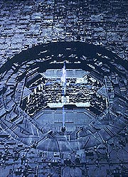
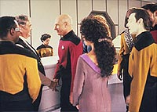
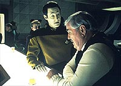
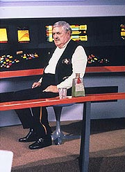
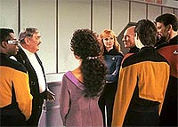

| MANCHETE
DO EPISDIO
Episdio
traz Scotty para o melhor
tratamento j dado ao personagem
Episdio
anterior | Prximo episdio Sinopse:
Data Estelar: 46125.3.
A Enterprise detecta um sinal de emergncia da USS Jenolen, uma
antiga nave da Federao perdida h 75 anos. Ao interromper seu curso para investigar,
Picard e sua tripulao descobrem que a velha nave se chocou com uma Esfera Dyson
--um enorme globo que envolve uma estrela inteira, construdo por uma espcie
extremamente avanada.
Fascinados pela descoberta, eles determinam que
os sistemas de suporte vida da Jenolen ainda esto operando em nveis mnimos,
embora no haja sinais de vida. Riker se teleporta para a nave, junto com Geordi
e Worf. O engenheiro-chefe verifica que o teletransporte ainda est ativo, mas
preso em um estranho modo de diagnstico que conservou um padro molecular no
buffer do equipamento por todo esse tempo. Ao tirar o equipamento do loop, Geordi
e Riker se surpreendem quando o engenheiro Montgomery Scott se materializa na
plataforma.
 Ferido e
com um brao imobilizado, Scotty se apressa para os consoles, na tentativa de
tirar outra pessoa que estava presa no ciclo do transporte, mas infelizmente o
padro de seu colega sobrevivente se perdeu ao longo dos anos, por uma falha no
equipamento. Riker, La Forge e Worf voltam Enterprise, trazendo junto o engenheiro
resgatado.
Ele levado enfermaria, onde a doutora Crusher rapidamente
o diagnostica com uma pequena fratura no brao e recomenda repouso. Enquanto isso,
Picard vai at l visitar Scotty, com quem ele estabelece uma empatia imediata
e uma vontade de ouvir mais das histrias do velho engenheiro a respeito do sculo
23. Scotty promete contar tudo a ele mais tarde. Satisfeito, o capito pede a
Geordi que volte engenharia para seguir com as anlises da Esfera Dyson. Scotty
quer ir engenharia junto com o engenheiro-chefe, mas dissuadido da idia.
Em vez disso, o hspede levado a seus aposentos.
No demora muito,
entretanto, para que ele fique enfadado e resolva ir engenharia por si mesmo.
Chegando l, Geordi tenta lidar com ele, mas uma vez que Scotty interfere continuamente
no trabalho, atrasando-o, o engenheiro-chefe obrigado a ser rspido e a pedir
que ele os deixe trabalhar. Irritado e deslocado, Scotty vai at o bar panormico.
Depois de uma rpida e desagradvel experincia com o sintehol, Data serve a ele
uma bebida legitimamente alcolica. De posse da garrafa, Scotty parte para o holodeck,
onde ele visita uma recriao da ponte da Enterprise original (NCC-1701).
Sentado em sua estao na ponte, Scotty bebe em homenagem aos velhos amigos
h muito desaparecidos, mas interrompido por Picard. O capito quer ouvir mais
de Scotty, e os dois trocam lembranas afveis sobre a Enterprise e a Stargazer.
Mas nada faz com que o engenheiro supere a sensao de envelhecimento e inutilidade
que est emergindo de sua defasagem com relao tecnologia da poca.
 Ciente da tristeza
de Scotty, Picard chama La Forge e pergunta se no poderia ser til tentar recuperar
os registros feitos pela Jenolen da Esfera Dyson. Ele pede que seu engenheiro
acompanhe Scotty at a velha nave, onde ele ter mais utilidade que qualquer tripulante
da Enterprise-D. A dupla de engenheiros desce ento Jenolen e comea a trabalhar
nos sistemas.
Enquanto isso, a Enterprise encontra o que parece ser uma
escotilha na superfcie da Esfera Dyson. Detectando um sistema de comunicao
perto da escotilha, eles abrem frequncia de saudao. Em vez de obter resposta,
a nave capturada por um raio trator e a escotilha gigantesca se abre. A Enterprise
arrastada para dentro da esfera. E, graas ao esforo executado pelos motores
para combater o raio trator, agora a nave est sem sistema de impulso, sendo atirada
diretamente para o centro da esfera, onde h uma estrela do tipo G. A Esfera est
totalmente desabitada, abandonada pela raa que a construiu depois de a estrela
interna comear a se tornar instvel.
Usando todos os recursos disponveis,
a Enterprise consegue se colocar em rbita da estrela, mas seus problemas esto
longe de terminar. A nave est presa dentro da esfera, e uma tempestade solar
ameaa destru-la em pouco tempo. A nica chance encontrar uma forma de sair.
Na Jenolen, Scotty e La Forge do pela falta da Enterprise e, graas aos
reparos nos sensores da nave, concluem que ela foi levada para dentro da esfera.
Deduzindo tudo que aconteceu, eles bolam um plano. Vo ativar o sistema de comunicao
da esfera, exatamente como fez a Enterprise, mas no estaro perto o suficiente
para serem capturados pelo raio trator. Assim que a escotilha da esfera estiver
aberta, eles colocaro a Jenolen --cujos motores de impulso eles acabaram de reparar--
bem no meio, mantendo "o p na porta", enquanto a Enterprise tem tempo
de escapar.
 A princpio,
Geordi no acredita que eles conseguiro, mas eventualmente Scotty o convence
a confiar nele, e o plano funciona. A Enterprise obrigada a destruir a Jenolen
antes de sair, mas no sem transportar Geordi e Scotty a bordo.
Sos
e salvos, Geordi e Scotty compartilham da camaradagem de terem ambos sido engenheiros-chefes
da Enterprise. E, finalmente, Picard decide dar a Scotty uma nave auxiliar, que
ele poder usar para ir onde quiser e aproveitar sua merecida aposentadoria.
Comentrios:
"Relics"
apresenta a melhor forma j utilizada para levar um personagem da Srie Clssica
ao sculo 24. Fugindo dos tradicionais clichs de viagem no tempo, a ida de Scotty
Enterprise-D no s perfeitamente factvel, nos termos do que entendemos do
funcionamento do transporte, como faz jus fama lendria do engenheiro de "milagreiro".
Todo mundo h de convir que no poderia haver nada melhor que uma mgica de engenharia
para garantir a sobrevivncia de Scotty, em suspenso, por quase um sculo.
S por isso, o segmento j mereceria figurar entre os melhores da temporada
e da srie toda. Mas esse s o primeiro lampejo de brilhantismo de um episdio
que consegue compactar uma quantidade imensa de informao e desenvolvimento de
personagens em apenas 45 minutos.
Normalmente, um episdio de A Nova
Gerao teria por obrigao centrar-se em um dos personagens regulares da
srie. Essa regra de ouro, estabelecida por Michael Piller a partir da terceira
temporada da srie, felizmente foi esquecida aqui, dadas as circunstncias incomuns.
A exceo regra d bons frutos e temos aqui, paradoxalmente, o melhor tratamento
j dado a Montgomery Scott em toda a histria de Jornada nas Estrelas.
 A angstia vivida
pelo personagem durante o episdio --a de que ele sobreviveu necessidade que
poderiam ter dele-- a mesma que Kirk e Spock so obrigados a encarar em "Jornada
nas Estrelas VI: A Terra Desconhecida". Ela de certa forma encarna todo
o sentimento dos fs de Jornada com relao srie original, aps o estabelecimento
de A Nova Gerao. Por essa razo, o episdio funciona aqui como uma meta-anlise
do momento pelo qual vivia o franchise, feito de forma muito mais carinhosa do
que o grosseiro "Generations", em que Picard enterra o capito
Kirk.
Aqui, temos Picard reverenciando Scotty, demonstrando preocupao
pelo engenheiro e querendo ouvir mais sobre as lendrias experincias do colega
de Kirk, o que mostra um genuno afeto por parte do roteirista Ron Moore para
com a Srie Clssica e uma vontade de toda a produo de realmente prestar
um tributo aos pioneiros de Jornada, em vez de simplesmente explorar sua
imagem em busca da audincia.
Todo esse sentimento produz vrias cenas
de intensa emoo, que culminam com a nostlgica visita de Scotty ponte da Enterprise
clssica. nessas horas que percebemos como Roddenberry realmente foi bem-sucedido
em seu desejo de transformar a Enterprise em mais um personagem de sua srie.
Entrar na ponte com Scotty aqui nos traz sensao semelhante de encontrarmos
um velho amigo, aps anos sem nos vermos.
O episdio consegue trabalhar
muito bem o fato inevitvel de Scotty estar extremamente defasado tecnologicamente
e mesmo assim preservar a integridade do personagem, mostrando o quo genial ele
pode ser. Mesmo sem o mesmo conhecimento tcnico, ele d banhos de engenharia
em Geordi, principalmente quando o assunto improvisar --o que mostra tambm
o quo pouco qualificado La Forge est para "calar os sapatos" do antigo
engenheiro-chefe da Enterprise.
No h uma cena com Scotty que no funcione
neste episdio. Ele est perfeito com Picard, com La Forge e com Data, os trs
principais focos da interao do engenheiro com a tripulao da Enterprise-D.
No faltam bons dilogos (como voc pode constatar abaixo).
Finalmente,
como se tudo isso ainda no bastasse, temos a introduo de um conceito cientfico
interessante, nunca antes usado em Jornada: a Esfera Dyson. Realmente,
um pouco triste acabarmos sem conhecer quem a construiu e que fim essas pessoas
tiveram, mas s o fato de ele terem usado o conceito agora, mesmo que com pouca
profundidade, j ganha mais pontos, por se tratar de uma obra-prima da engenharia
--algo metaforicamente importante para o episdio, que deveria falar mais alto
ao corao dos engenheiros.
 Tecnicamente,
o episdio primoroso. A sequncia mais difcil, a de Scotty na Enterprise clssica,
perfeita, e tambm o so as cenas espaciais, que envolvem a Esfera Dyson (do
lado de dentro e do lado de fora) e a Enterprise. O nico defeito realmente assumido
do episdio est no roteiro --como diabos Scotty e La Forge foram teleportados
da Jenolen com seus escudos erguidos?--, mas, como disse Ron Moore, isso poderia
ser facilmente resolvido com uma linha de dilogo, e estou disposto a aceitar
que essa linha foi dita fora de tela, sem que nenhum de ns tenha visto.
De resto, "Relics" um episdio que fala realmente ao corao,
usando uma premissa criativa e verossmil para trazer a bordo da Enterprise-D
um dos personagens mais queridos da histria de Jornada. No teria como
ser melhor. Citaes: Geordi
- "Yeah, but locking it into a diagnostic cycle so that the pattern wouldn't
degrade and then cross-connecting in the phase inducers to provide regenerative
power source, that's absolutely brilliant."
("Sim, mas travar
em um ciclo de diagnstico para que o padro no degradasse e ento fazer uma
conexo cruzada nos indutores de fase para fornecer uma fonte de energia regenerativa,
isso foi absolutamente brilhante.")
Scotty - "Well, I think it
was only 50% brilliant. Franklin deserves better."
("Bem, acho
que foi apenas 50% brilhante. Franklin merecia mais.")
Scotty
- "Well, I say this about your Enterprise. The doctors are a fair sight prettier."
("Bom, digo isso sobre sua Enterprise. Os doutores so bem mais bonitos.")
Beverly - "Other than a few bumps and bruises I say you feel fine
for a man of 147."
("Alm de umas poucas pancadas e arranhes,
diria que voc se sente bem para um homem de 147 anos.")
Scotty -
"And I don't feel a day over 120."
("E eu no me sinto
nem um dia alm dos 120.")
Scotty - "You mind a little
advice? Starfleet captains are like children. They want everything right now and
they want it their way. But the secret is to give them only what they need, not
what they want."
("Voc quer um pequeno conselho? Capites da
Frota Estelar so como crianas. Eles querem tudo agora e querem do jeito deles.
Mas o segredo dar a eles apenas o que precisam, no o que querem.")
Geordi - "Yeah, well, I told the captain I will have this analysis done
in an hour."
("Sim, bem, eu disse ao capito que teria essa
anlise feita em uma hora.")
Scotty - "How long will it really
take?"
("Quanto realmente vai levar?")
Geordi -
"An hour."
("Uma hora.")
Scotty - "Oh,
You did't tell him how long it would REALLY take, did you?"
("Oh,
voc no disse a ele quanto REALMENTE ia levar, disse?")
Geordi -
"But of course I did."
("Mas claro que sim.")
Scotty - "Oh, laddie. You got a lot to learn if you want the people to
think of you as a miracle worker."
("Oh, laddie. Voc tem muito
a aprender se quiser que as pessoas pensem em voc como um milagreiro.")
Scotty - "You are not quite... human, are you?"
("Voc
no muito... humano, ?")
Data - "No, sir. I am an android.
Lieutenant commander Data."
("No, senhor. Sou um andride.
Tenente-comandante Data.")
Scotty - "Synthetic scotch, synthetic
commanders..."
("Scotch sinttico, comandantes sintticos...")
Scotty - "What is it?"
("O que ?")
Data
- "It is... it is... It is green."
("... ... verde.")
Computador - "Please, enter program."
("Por favor,
entre com o programa.")
Scotty - "The android at the bar said
you could show me my old ship. Let me see it!"
("O andride
no bar disse que voc poderia me mostrar minha velha nave. Deixe-me v-la!")
Computador - "Insufficient data. Please specify parameters."
("Dados insuficientes. Favor especificar parmetros.")
Scotty
- "The Enterprise! Show me the bridge of the Enterprise, you chattering piece
of--"
("A Enterprise! Mostre-me a ponte da Enterprise, sua pea
falante de--" )
Computador - "There have been five Federation
ships with that name. Please specify by registry number."
("Houve
cinco naves da Federao com esse nome. Favor especificar por nmero de registro.")
Scotty - "N-C-C-1-7-0-1. No bloody 'A', 'B', 'C', or 'D'."
("N-C-C-1-7-0-1. Sem droga de 'A', 'B', 'C' ou 'D'.")
Geordi
- "You know, if we can get these engines back on line, we could track them
with their impulse ion trail."
("Sabe, se ns pudermos fazer
esses motores funcionarem, ns poderamos rastre-los com seu rastro inico de
impulso.")
Scotty - "Are you deaft?? The main drive assembly's
shot, the inducers are melted, the power couplings are wrecked, we need a week
just to get started! But... we don't have a week, so we've no sense crying about
it. Come on, we'll see what we can do with your power converter."
("Voc est surdo?? A montagem do motor principal est destruda, os indutores
derretidos, os alinhadores de fora acabamos, precisamos de uma semana s para
comearmos. Mas... no temos uma semana, ento no faz sentido chorar sobre isso.
Venha, vamos ver o que podemos fazer com seu conversor de fora.")
Trivia:  Essa a terceira vez que um ator regular da Srie Clssica aparece em
A Nova Gerao. Antes de James Doohan (Scotty), j haviam feito aparies
DeForest Kelley (McCoy), em "Encounter at Farpoint",
e Leonard Nimoy (Spock), em "Unification".
Essa a terceira vez que um ator regular da Srie Clssica aparece em
A Nova Gerao. Antes de James Doohan (Scotty), j haviam feito aparies
DeForest Kelley (McCoy), em "Encounter at Farpoint",
e Leonard Nimoy (Spock), em "Unification".
Para
saber tudo sobre os bastidores do episdio, clique aqui.
Para
saber tudo sobre o que uma Esfera Dyson, clique aqui.
Ficha
tcnica:
Escrito
por Ronald D. Moore
Direo de Alexander Singer
Exibido
em 12/10/1992
Produo: 130 Elenco: Patrick
Stewart como Jean-Luc Picard
Jonathan Frakes como
William Thomas Riker
Brent Spiner como Data
LeVar
Burton como Geordi La Forge
Michael Dorn como Worf
Gates McFadden como Beverly Crusher
Marina Sirtis
como Deanna Troi
Elenco
convidado:
James Doohan como capito Montgomery
"Scotty" Scott
Lanei Chapman como alferes Ragar
Erick
Weiss como alferes
Stacie Foster como tenente Bartel
Ernie
Mirich como garom
Majel Barrett-Roddenberry como a voz do computador
Episdio
anterior | Prximo episdio
|